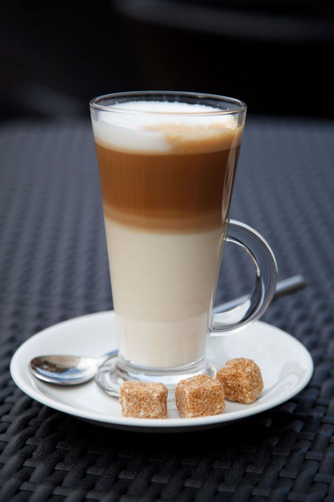

Латте

Нажмите на изображение, чтобы увидеть в полном размере
Описание
Латте — это самый молочный кофейный напиток в нашем меню. Нежный и мягкий вкус достигается за счет большого количества вспененного молока и одной порции эспрессо. Идеальный выбор для тех, кто только начинает знакомство с кофе или предпочитает мягкие, сливочные вкусы.
Характеристики
- Состав: Эспрессо, молоко 3.2%, молочная пена
- Объем: 300 мл / 400 мл
- Крепость: Мягкая
- Калорийность: 150 ккал / 300 мл
- Температура подачи: Горячий
- Дополнительно: Доступны сиропы (карамель, ваниль, лесной орех)
- Цена: 240 руб. / 300 мл